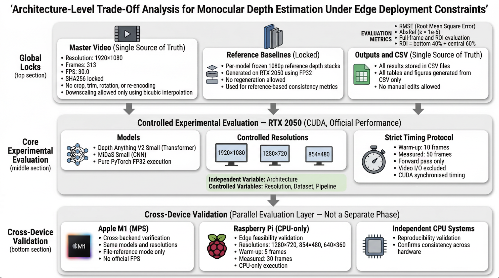

Methodology
Controlled benchmark design, evaluation workflow, and validation pipeline
Controlled Evaluation Design
The study evaluates whether model architecture, rather than input resolution, governs the trade-off between inference speed and structural consistency under deployment constraints. A transformer-based model and a CNN-based model were compared under a strictly locked and reproducible protocol.
Reference and ROI Strategy
A fixed 1920×1080 reference depth stack was generated once and reused in file-reference mode across all experiments. Performance was evaluated inside a safety-critical Region of Interest (ROI), defined to reflect the ground-level navigation area most relevant for assistive guidance.
Benchmark and Validation Layers
The official benchmark was executed on an RTX 2050 using CUDA. Apple M1 and Raspberry Pi were used as validation and feasibility layers to assess reproducibility and deployment behaviour across heterogeneous systems.
Core Benchmark Setup
- RTX 2050 (CUDA)
- Depth Anything V2 Small
- MiDaS Small
- 1920×1080, 1280×720, 854×480
- FPS, ROI RMSE, ROI AbsRel
Controlled Evaluation Framework
Locked global controls, official RTX benchmarking, and cross-device validation structure used throughout the architecture comparison study.

Figure. Architecture-level controlled methodology showing the global lock layer, the official RTX 2050 experimental pipeline, and the parallel cross-device validation layer.
Locked Input
Master video and reference depth stack fixed under a reproducible protocol
Architecture Comparison
Transformer and CNN models evaluated at matched resolutions
Metric Extraction
Inference throughput and structural consistency measured in the ROI
Cross-Device Validation
Reproducibility and feasibility checked across RTX, M1, and Raspberry Pi
Primary Variable
Model architecture
Controlled Variable
Input resolution
Key Metrics
FPS · RMSE · AbsRel
Deployment Focus
Edge feasibility